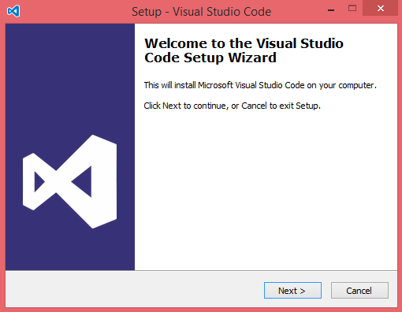
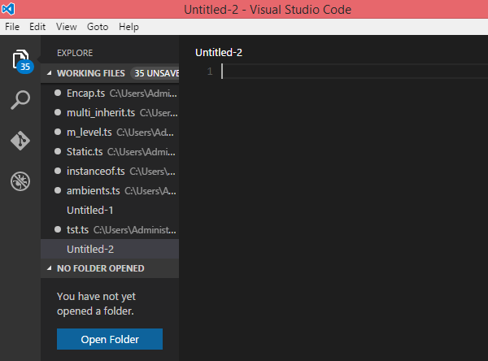
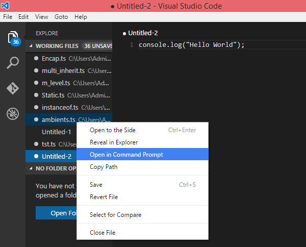
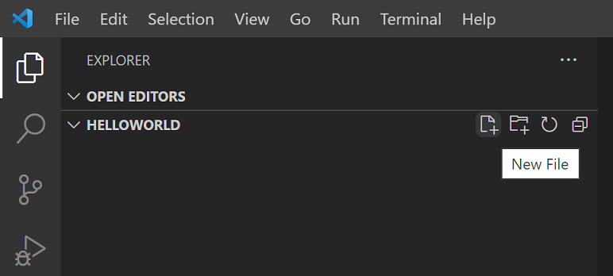
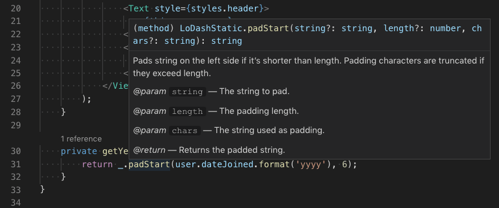
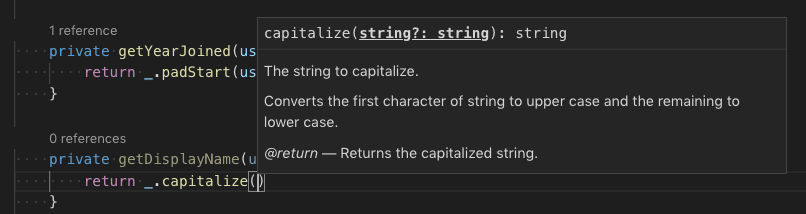
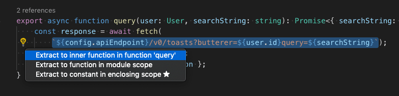
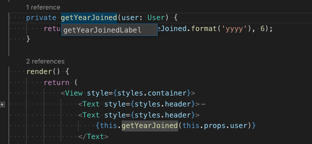

VS Code を使用した TypeScript 開発
多くの IDE には TypeScript をサポートするプラグインがあります。例：VS Code、Sublime Text 2、WebStorm / PHPStorm、Eclipse など。
この章では主に VS Code を紹介します。VS Code は Mac OS X、Windows、Linux 上で動作する、最新の Web アプリケーションやクラウドアプリケーションを開発するためのクロスプラットフォームなソースコードエディタで、Microsoft によって開発されました。
VS Code は TypeScript 言語の構文サポートを標準で内蔵していますが、TypeScript コンパイラ tsc は含まれていません。TS ソースコードを JS に変換する場合（コマンド tsc HelloWorld.ts を実行）、グローバルまたはプロジェクトのワークスペースに TypeScript コンパイラを個別にインストールする必要があります。
VS Code チュートリアル：https://www.runoob.com/vscode/vscode-tutorial.html
また、中国国内では Alibaba と ByteDance も VS Code ベースの AI IDE を開発しています：
TypeScript コンパイラのインストール
最も簡単なインストール方法は、Node.js のパッケージマネージャー npm を使用することです。npm がインストール済みであれば、以下のコマンドを実行することでグローバル（-g）にインストールできます：
npm install -g typescript
インストールが完了したら、バージョン番号を出力して確認できます：
tsc --version
Windows での Visual Studio Code のインストール
1、ダウンロードVisual Studio Code。

2、VSCodeSetup.exe アイコンをダブルクリックインストールします。

3、インストールが完了すると、Visual Studio Code の画面は次のようになります：

4、左側のウィンドウで現在編集中のコードファイルをクリックして、選択しますopen in command prompt（ターミナルで開く）、このとき画面の右下半分でtscコマンドを使用して TypeScript ファイルのコードを実行できます。

Mac OS X での Visual Studio Code のインストール
Mac OS X での Visual Studio Code のインストールと設定は次を参照してください：https://code.visualstudio.com/Docs/editor/setup
Linux での Visual Studio Code のインストール
Linux での Visual Studio Code のインストールと設定は次を参照してください：https://code.visualstudio.com/Docs/editor/setup
入門サンプル：Hello World
Node.js 環境の最小限の Hello World プロジェクトを例として、プロジェクトフォルダーを新規作成し、VS Code を開きます：
mkdir HelloWorld cd HelloWorld code .
エクスプローラーで新しいファイル helloworld.ts を作成します。

以下の TS コードを記述すると、TS 固有のキーワード let と文字列型の注釈を確認できます：
let message : string = "Hello World"; console.log(message);
【統合ターミナル】を開き（ショートカットキー kb(workbench.action.terminal.toggleTerminal)）、tsc helloworld.ts と入力してコードをコンパイルします。コンパイルが成功すると、自動的に JS ファイル helloworld.js が生成されます。

ローカルに Node.js がインストールされていれば、node helloworld.js を実行することでコードを実行できます。

コンパイル後の helloworld.js を開くと、コードから型宣言が削除され、let が ES5 の var にダウングレードされていることがわかります：
var message = "Hello World"; console.log(message);
スマート入力支援（IntelliSense）
スマート入力支援（IntelliSense）は、コードの自動補完、ホバードキュメント、関数パラメータのシグネチャヒントを提供し、コーディング効率と精度を向上させます。

VS Code は、単一の TS ファイル、およびtsconfig.json設定付きの TS プロジェクトに対して、完全なスマート入力支援を提供します。
ホバードキュメントのヒント
マウスを任意の TS 識別子の上にホバーすると、変数/関数の型と説明ドキュメントをすばやく確認できます；
ショートカットキーkb(editor.action.showHover)でカーソル位置に手動でホバーヒントを呼び出せます。

関数シグネチャのヒント
関数呼び出しコードを記述すると、エディタは関数の引数の説明を自動的に表示し、現在入力中のパラメータをハイライトします；
左括弧を入力するか、(カンマを入力すると、,シグネチャヒントが自動的に表示されます。ショートカットキーkb(editor.action.triggerParameterHints)で手動で呼び出すこともできます。

コードスニペット（Snippets）
スマート補完に加えて、VS Code には基本的な TS コードスニペットが組み込まれており、キーワードを入力するとショートカットテンプレートが自動的に表示されます。

サードパーティの拡張機能をインストールしてスニペットライブラリを拡張したり、TS コードスニペットをカスタマイズしたりできます。詳細は【ユーザー定義コードスニペット】ドキュメントを参照してください。
ヒント：設定ファイルで、[設定項目] を
editor.snippetSuggestions[値] に設定すると"none"スニペットヒントをオフにできます。保持したい場合は、スニペット表示の優先度を設定できます：top（先頭に固定）、bottom（最後に固定）、inline（通常の候補と混在、アルファベット順、デフォルト設定）。
エラーと警告の通知
TS 言語サービスがコードをリアルタイムで検証し、構文上および論理上の問題を自動的にマークします：
- エディタのステータスバーに、現在のプロジェクトのエラーと警告の総数が表示されます；
- ステータスバーの統計数字をクリックするか、ショートカットキー
kb(workbench.actions.view.problems)で【問題】パネルを開き、すべてのエラーを一覧表示します； - 異常があるコード行は行内が赤で表示され、同時に右側のミニマップにエラー位置が示されます。

ショートカットキーkb(editor.action.marker.nextInFiles) / kb(editor.action.marker.prevInFiles)で現在のファイルの前後の問題箇所にジャンプし、ポップアップで詳細と利用可能なクイックフィックスを表示します。

コードジャンプナビゲーション
ナビゲーション機能を利用して、大規模な TS プロジェクトのソースコードをすばやく参照できます：
- 定義へ移動
kb(editor.action.revealDefinition)：識別子のソースコード定義位置を特定します； - 定義をプレビュー
kb(editor.action.peekDefinition)：ポップアップでソースコードをプレビューし、現在のファイルを切り替えません； - すべての参照を検索
kb(editor.action.goToReferences)：プロジェクト内でその識別子が呼び出されているすべての場所を一覧表示します； - 型定義へ移動：変数が属する型のソースコードを特定します（クラスインスタンスの場合は、インスタンス作成コードではなくクラス本体に移動します）；
- 実装へ移動
kb(editor.action.goToImplementation)：インターフェース/抽象メソッドの具体的な実装コードを検索します。
コマンドパレット（kb(workbench.action.showCommands)）のシンボル検索を使用して、すばやくジャンプできます：
- 現在のファイル内でシンボルを検索
kb(editor.action.gotoSymbol) - ワークスペース全体でシンボルを検索
kb(workbench.action.showAllSymbols)
コードフォーマット
VS Code には TS フォーマットツールが組み込まれており、デフォルトルールがそのまま使用できます。
設定によりjs/ts.format.*一連の設定でフォーマットルールをカスタマイズできます（例：中括弧を別の行にする）。組み込みフォーマットが不要な場合は、設定:
"js/ts.format.enable": false
オフにします。
チームのカスタムコーディング規約に合わせる必要がある場合は、プラグインマーケットプレイスから専用のフォーマット拡張機能をインストールできます。
コードリファクタリング
VS Code には一般的な TS リファクタリング機能が組み込まれており、例えば関数の抽出、定数の抽出。リファクタリングしたいコードを選択し、エディタのサイドの電球アイコンをクリックするか、ショートカットキーでkb(editor.action.quickFix)リファクタリングメニューを表示します。

その他のリファクタリングルールや、リファクタリングショートカットキーのカスタマイズについては、【TypeScriptコードリファクタリング】ドキュメントを参照してください。
一括リネーム
変数/メソッドを選択し、ショートカットキーでkb(editor.action.rename)プロジェクト内のすべての同じ名前の識別子をワンキーで変更します。

デバッグ機能
VS Code は TS デバッグを標準で完全にサポートしており、ソースマップ（SourceMap）に対応しています。ブレークポイント、変数の表示、コールスタックの追跡、デバッグコンソールでの操作をサポートしています。詳細は【TSデバッグガイド】と一般的なデバッグドキュメントを参照してください。
フロントエンドWebページのデバッグ
組み込みの Chrome/Edge デバッグプラグイン、または Firefox デバッグ拡張機能を使用して、ブラウザ側の TS コードをデバッグします。
バックエンドNode.jsのデバッグ
組み込みデバッガーを使用して Node.js サービスをデバッグします。公式のチュートリアルで Express プロジェクトのデバッグをすぐに始められます。

リンター（Linter）
Linter はコードの潜在的な問題をチェックし、コーディングスタイルを規範化するために使用されます。VS Code には TS 検証ツールが組み込まれていないため、プラグインマーケットで対応する拡張機能をインストールできます。
主流ツールESLintTS と完全互換で、ESLint プラグインをインストールすると、エディターがリアルタイムでエラーを表示し、多くの問題はワンクリックで素早く修正できます。typescript-eslintドキュメントで TS プロジェクトの ESLint 環境設定を案内しています。
クリックしてノートを共有
<p style="font-size:14px;">ノートはこの記事の内容を拡張したものである必要があります！</p><br> <p style="font-size:12px;"><a href="../tougao.html" target="_blank">記事の投稿はこちらをクリック</a></p> <p style="font-size:14px;"><a href="../w3cnote/runoob-user-test-intro.html" target="_blank">登録招待コードの取得方法</a></p> <h3 class="text-muted"><i class="fa fa-info-circle" aria-hidden="true"></i> ノートを共有する前に<a href=";.html" class="runoob-pop">ログイン</a>が必要です！</h3> <p><a href="../w3cnote/runoob-user-test-intro.html" target="_blank">登録招待コードの取得方法</a></p>